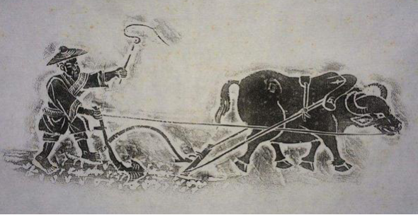

中国古代农学最完备的总结性著作，集前代农学之大成，涵盖农业政策、水利规划、荒政措施、作物栽培、畜牧兽医等内容，是研究中国古代农业的重要文献。

明朝建立后，统治者重视农业生产，推行了一系列恢复和发展农业的政策。徐光启生活的时代，农业技术已相当成熟，前代农学著作积累了丰富的资料，为《农政全书》的编纂提供了有利条件。
徐光启关注国计民生，深感农业对国家的重要性。他广泛收集历代农学著作和民间经验，亲自进行农业试验和研究，历时数十年终于编成《农政全书》，集中国古代农学之大成。
《农政全书》是中国古代农学最完备的总结性著作，全书共60卷，50多万字，涵盖农业政策、农事、农器、农产、荒政、水利等12个门类，堪称中国古代农学的百科全书。
水利在《农政全书》中占有重要地位，全书共收录水利著作29种。徐光启重视水利对农业的重要性，详细论述了运河、灌溉、防洪等水利工程的规划与建设。
"荒政"是《农政全书》的一大特色，收录了历代救荒、赈灾的措施和经验。徐光启主张通过兴修水利、储备粮食、种植救荒作物等方式预防和应对自然灾害。
书中对粮食作物、经济作物、果树、蔬菜等的栽培技术进行了系统总结。徐光启特别重视作物选种、育种和田间管理，对提高作物产量和品质进行了深入研究。
《农政全书》对畜牧兽医技术也有详细记载，包括马、牛、羊、猪、鸡等畜禽的饲养管理方法，以及常见疾病的防治技术，丰富了中国古代畜牧兽医的知识体系。
书中还记载了丰富的农产品加工与储藏技术，包括粮食加工、油脂制取、酿造发酵、果蔬贮藏等。这些技术不仅延长了农产品的保存期，也丰富了人民的物质生活。